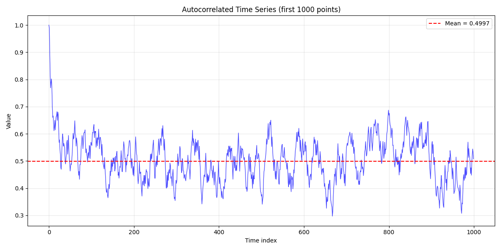
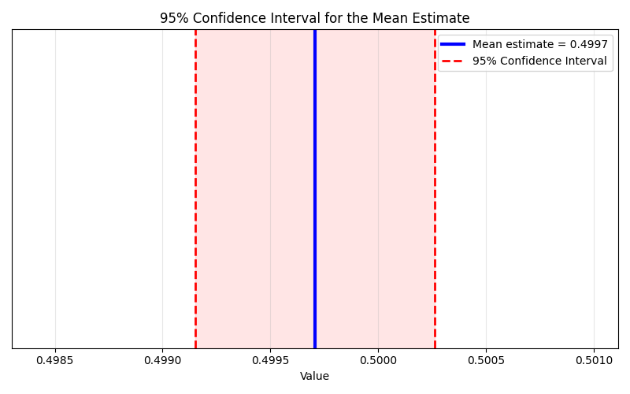
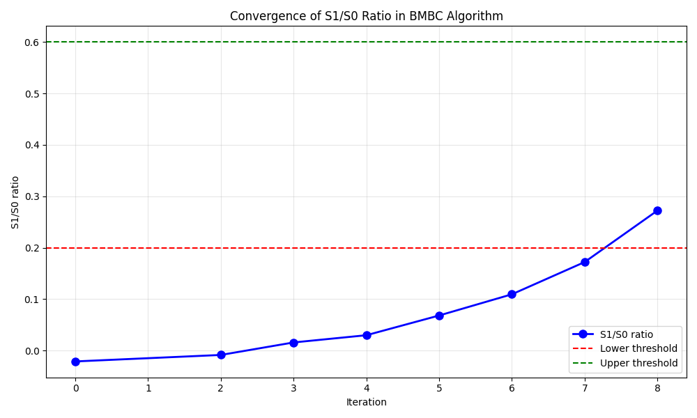

Note
Go to the end to download the full example code.
Batch Mean Batch Correlation on a correlated time series¶
This example demonstrates the Batch Mean Batch Correlation (BMBC) method to compute uncertainty of empirical mean estimator when samples are not i.i.d.
Setup and imports¶
import openturns as ot
import otExperimentalMeasurement as otEM
import matplotlib
matplotlib.use('Agg')
import matplotlib.pyplot as plt
Visualize the time series¶
Plot a subset of the time series to show the correlation structure
fig_ts = plt.figure(figsize=(12, 6))
ax_ts = fig_ts.add_subplot(1, 1, 1)
# Plot first 1000 points to show the autocorrelation structure
subset_size = 1000
ax_ts.plot(X[:subset_size, 0], Y[:subset_size, 0], 'b-', linewidth=1, alpha=0.7)
ax_ts.set_xlabel('Time index')
ax_ts.set_ylabel('Value')
ax_ts.set_title(f'Autocorrelated Time Series (first {subset_size} points)')
ax_ts.grid(True, alpha=0.3)
# Add mean line
y_mean = Y[:, 0].computeMean()[0]
ax_ts.axhline(y=y_mean, color='r', linestyle='--',
label=f'Mean = {y_mean:.4f}')
ax_ts.legend()
plt.tight_layout()
# Save time series plot
ts_output_file = '/tmp/bmbc_time_series.png'
plt.savefig(ts_output_file, dpi=150, bbox_inches='tight')
print(f"Time series plot saved to {ts_output_file}")

Time series plot saved to /tmp/bmbc_time_series.png
Apply Batch Mean Batch Correlation¶
Initialize BMBC with adaptive batch sizing
M = 300 # Initial batch size
threshold = 0.2 # Lower threshold for S1/S0 ratio
upperThreshold = 0.6 # Upper threshold for S1/S0 ratio
bmbc = otEM.BatchMeanBatchCorrelation(
X, Y,
threshold=threshold,
upperThreshold=upperThreshold,
fixedBatchSize=False,
startBatchSize=M,
sortSample=False
)
Run the algorithm
bmbc.run()
result = bmbc.getResult()
Compute and display variance of mean estimator
var_mu = result.computeMeanEstimatorVariance()
print(r"Variance of mean estimator: $N \sigma^2_{\mu}$ = %.4f" % (N * var_mu))
print("Expected value for comparison: ~0.0834")
Variance of mean estimator: $N \sigma^2_{\mu}$ = 0.0804
Expected value for comparison: ~0.0834
Compute 95% confidence interval for the mean¶
Calculate 95% confidence interval using the variance estimate
std_mu = var_mu**0.5 # Standard error of the mean
z_score = 1.96 # 95% confidence interval for normal distribution
confidence_interval = (y_mean - z_score * std_mu, y_mean + z_score * std_mu)
print(f"\n95% Confidence Interval for the Mean:")
print(f" Point estimate: {y_mean:.6f}")
print(f" Standard error: {std_mu:.6f}")
print(f" Lower bound: {confidence_interval[0]:.6f}")
print(f" Upper bound: {confidence_interval[1]:.6f}")
print(f" Margin of error: {(confidence_interval[1] - confidence_interval[0])/2:.6f}")
print(f" Relative error: {(confidence_interval[1] - confidence_interval[0])/(2*y_mean)*100:.2f}%")
95% Confidence Interval for the Mean:
Point estimate: 0.499707
Standard error: 0.000283
Lower bound: 0.499151
Upper bound: 0.500262
Margin of error: 0.000556
Relative error: 0.11%
Visualize confidence interval¶
Create a visualization showing the mean estimate with confidence interval
fig_ci = plt.figure(figsize=(8, 5))
ax_ci = fig_ci.add_subplot(1, 1, 1)
# Plot the mean estimate
ax_ci.axvline(x=y_mean, color='blue', linewidth=3,
label=f'Mean estimate = {y_mean:.4f}')
# Plot confidence interval
ax_ci.axvline(x=confidence_interval[0], color='red', linestyle='--',
linewidth=2, label='95% Confidence Interval')
ax_ci.axvline(x=confidence_interval[1], color='red', linestyle='--', linewidth=2)
# Fill confidence interval area
ax_ci.fill_between([confidence_interval[0], confidence_interval[1]],
[0, 0], [1, 1], color='red', alpha=0.1)
# Formatting
ax_ci.set_xlim(confidence_interval[0] - 3*std_mu, confidence_interval[1] + 3*std_mu)
ax_ci.set_ylim(0, 1)
ax_ci.set_xlabel('Value')
ax_ci.set_title('95% Confidence Interval for the Mean Estimate')
ax_ci.legend()
ax_ci.grid(True, alpha=0.3)
# Remove y-axis ticks as they're not meaningful here
ax_ci.set_yticks([])
plt.tight_layout()
# Save confidence interval plot
ci_output_file = '/tmp/bmbc_confidence_interval.png'
plt.savefig(ci_output_file, dpi=150, bbox_inches='tight')
print(f"\nConfidence interval plot saved to {ci_output_file}")

Confidence interval plot saved to /tmp/bmbc_confidence_interval.png
Analyze iteration results¶
Get iteration results
resultSample = result.getBatchIteration()
print(f"\nNumber of iterations: {resultSample.getSize()}")
print("Result columns:", resultSample.getDescription())
Number of iterations: 8
Result columns: [iteration,M,S0,S1,$S_1/S_0$]
Display detailed iteration information
print("\nIteration details:")
for i in range(resultSample.getSize()):
row = resultSample[i]
print(f"Iteration {int(row[0])}: M={int(row[1])}, S0={row[2]:.3f}, S1={row[3]:.3f}, S1/S0={row[4]:.4f}")
Iteration details:
Iteration 0: M=300, S0=0.872, S1=-0.018, S1/S0=-0.0212
Iteration 2: M=210, S0=1.795, S1=-0.015, S1/S0=-0.0086
Iteration 3: M=147, S0=3.568, S1=0.056, S1/S0=0.0158
Iteration 4: M=102, S0=7.270, S1=0.217, S1/S0=0.0298
Iteration 5: M=71, S0=14.241, S1=0.971, S1/S0=0.0682
Iteration 6: M=49, S0=28.052, S1=3.069, S1/S0=0.1094
Iteration 7: M=34, S0=52.761, S1=9.080, S1/S0=0.1721
Iteration 8: M=23, S0=98.340, S1=26.769, S1/S0=0.2722
Visualize S1/S0 evolution¶
Create the plot
fig = plt.figure(figsize=(10, 6))
ax = fig.add_subplot(1, 1, 1)
# Plot S1/S0 ratio evolution
ax.plot(resultSample[:, 0], resultSample[:, 4], 'bo-',
linewidth=2, markersize=8, label='S1/S0 ratio')
# Add threshold lines
ax.axhline(y=threshold, color='r', linestyle='--', label='Lower threshold')
ax.axhline(y=upperThreshold, color='g', linestyle='--', label='Upper threshold')
# Formatting
ax.set_xlabel('Iteration')
ax.set_ylabel('S1/S0 ratio')
ax.set_title('Convergence of S1/S0 Ratio in BMBC Algorithm')
ax.legend()
ax.grid(True, alpha=0.3)
plt.tight_layout()

Save the plot
output_file = '/tmp/bmbc_s1_s0_evolution.png'
plt.savefig(output_file, dpi=150, bbox_inches='tight')
print(f"\nPlot saved to {output_file}")

Plot saved to /tmp/bmbc_s1_s0_evolution.png
Block Bootstrap demonstration¶
Generate bootstrap sample using optimal batch size
bootstrapSample = result.getBlockBoostrapSample()
print(f"\nBlock bootstrap sample generated with {bootstrapSample.getSize()} points")
print("First 5 values:", [bootstrapSample[i, 0] for i in range(5)])
print("Last 5 values:", [bootstrapSample[i, 0] for i in range(-5, 0)])
Block bootstrap sample generated with 999994 points
First 5 values: [0.4908951210193917, 0.4679752576855539, 0.494726168125481, 0.46916975537227334, 0.4240190621493513]
Last 5 values: [0.5496838111619834, 0.5110502430591896, 0.5527676061088337, 0.596905114757615, 0.5431608692259351]
Total running time of the script: (0 minutes 14.206 seconds)